En esta investigación se encuestó a 100 personas para conocer el medio de transporte que utilizan con mayor frecuencia para trasladarse a su escuela o trabajo.
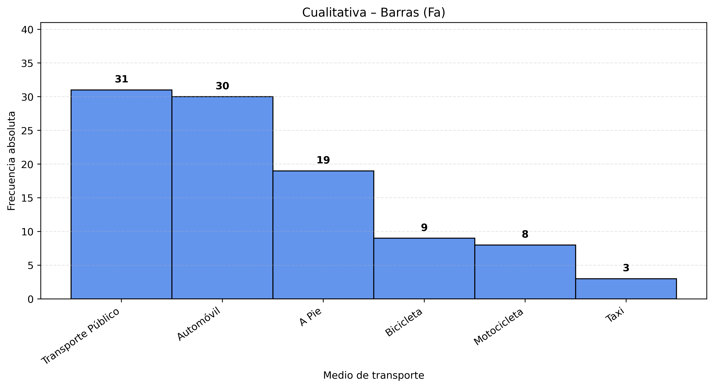
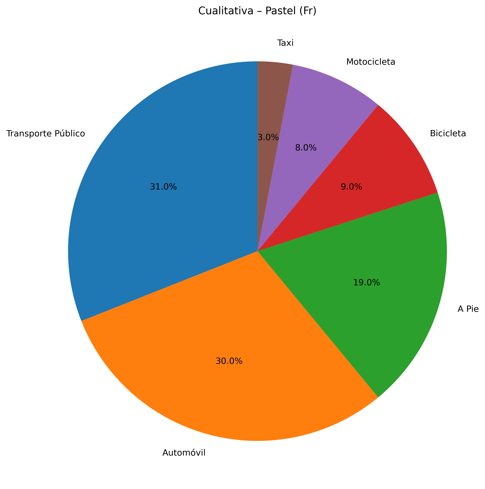
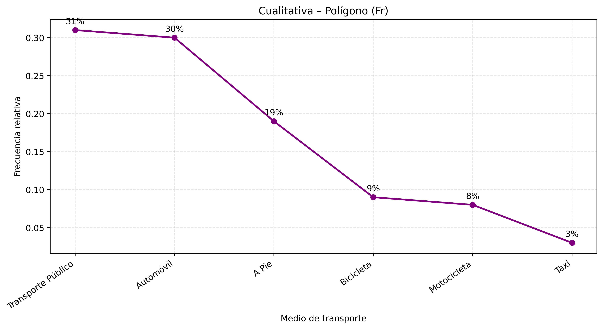
| TABLA DE FRECUENCIA CUALITATIVA |
| MEDIO DE TRANSPORTE |
Fa |
Fr |
| Transporte Público |
31 |
31% |
| Automóvil |
30 |
30% |
| A Pie |
19 |
19% |
| Bicicleta |
9 |
9% |
| Motocicleta |
8 |
8% |
| Taxi |
3 |
3% |
| Total 100 / 100% |
CONCLUCIONES
De las 100 personas encuestadas, el transporte público 31% y el automóvil propio 30% son los más utilizados, representando juntos el 61% de las respuestas. El transporte activo a pie 19% + bicicleta 9% suma 28%. Moto 8% y taxi 3% son minoritarios.
CUANTITATIVA DISCRETA
En este estudio se registró la cantidad de mascotas que tienen 100 familias.
DATOS
- 2, 1, 3, 0, 2, 4, 1, 2, 3, 1,
- 0, 2, 1, 3, 4, 2, 1, 0, 2, 3,
- 1, 2, 4, 0, 3, 1, 2, 1, 0, 2,
- 3, 4, 1, 2, 0, 3, 1, 2, 4, 0,
- 1, 2, 3, 1, 0, 2, 4, 1, 3, 2,
- 0, 1, 2, 3, 4, 2, 1, 0, 3, 2,
- 1, 4, 0, 2, 3, 1, 2, 0, 4, 3,
- 1, 2, 0, 3, 4, 1, 2, 0, 3, 1,
- 2, 4, 0, 1, 3, 2, 1, 0, 4, 3,
- 2, 1, 3, 0, 4, 2, 1, 0, 3, 2,
DATOS ORDENADOS
- 0, 0, 0, 0, 0, 0, 0, 0, 0, 0,
- 0, 0, 0, 0, 0, 0, 1, 1, 1, 1,
- 1, 1, 1, 1, 1, 1, 1, 1, 1, 1,
- 1, 1, 1, 1, 1, 1, 1, 2, 2, 2,
- 2, 2, 2, 2, 2, 2, 2, 2, 2, 2,
- 2, 2, 2, 2, 2, 2, 2, 2, 2, 2,
- 3, 3, 3, 3, 3, 3, 3, 3, 3, 3,
- 3, 3, 3, 3, 3, 3, 3, 3, 3, 4,
- 4, 4, 4, 4, 4, 4, 4, 4, 4, 4,
- 4, 4, 4, 4, 4, 4, 4, 4, 4, 4,
TABLA DE FRECUENCIA
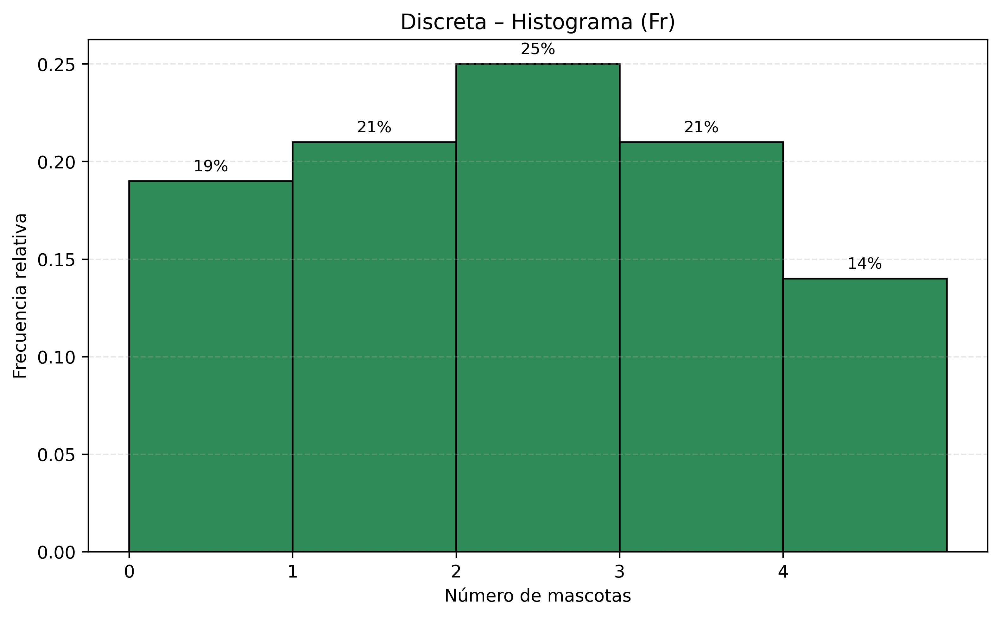
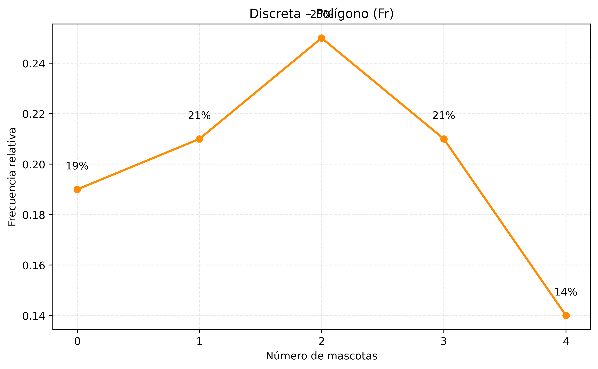
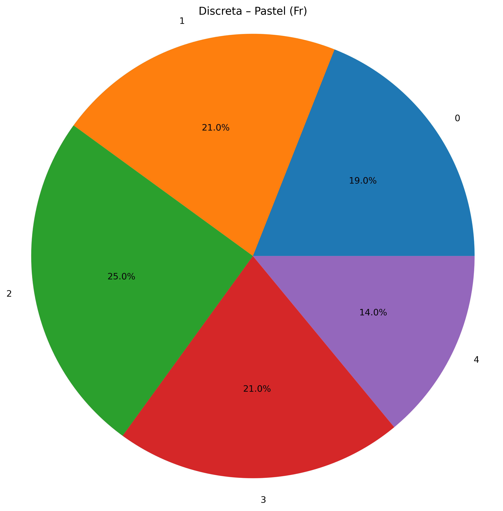
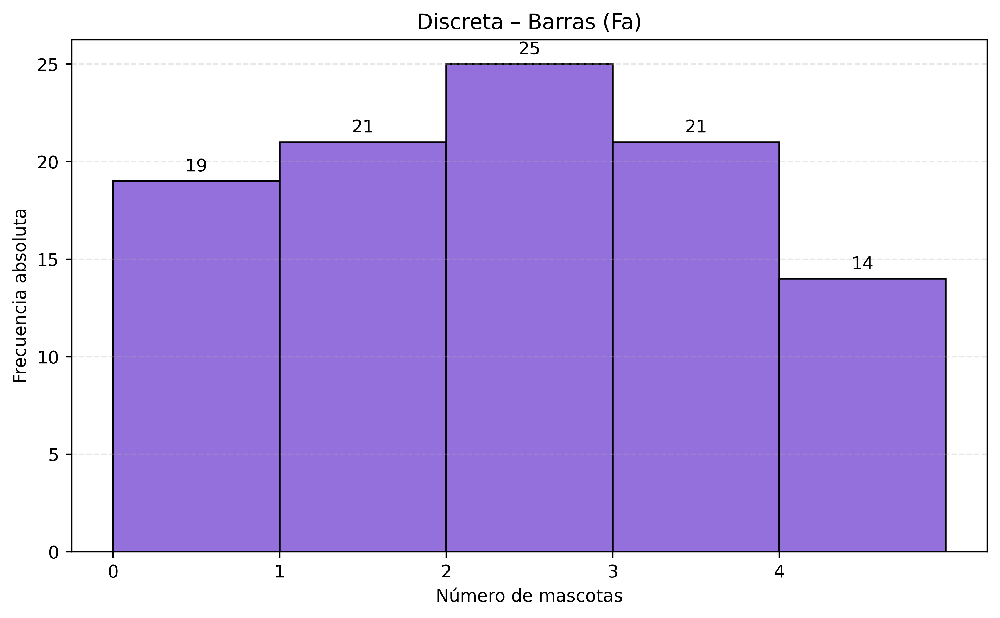
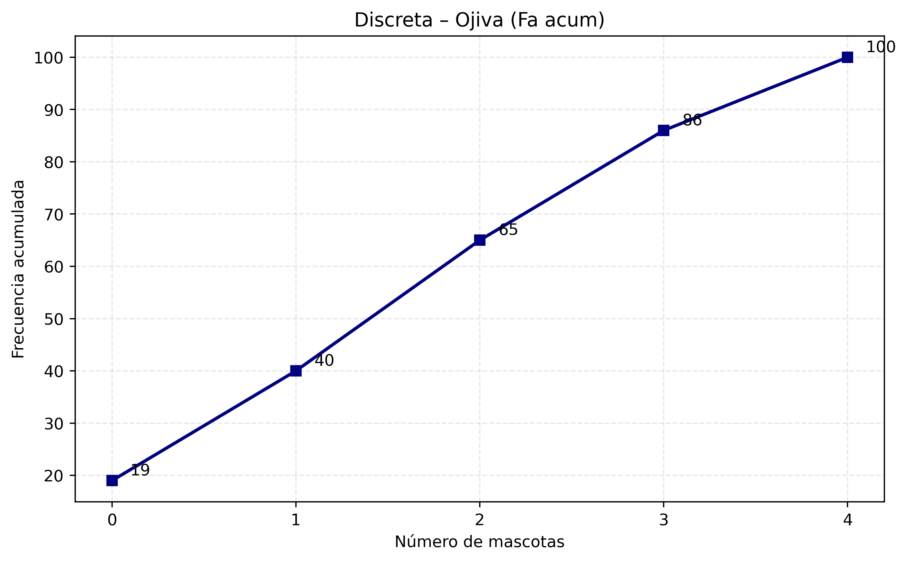
| TABLA DE FRECUENCIA CUANTITATIVA DISCRETA |
| CLASE |
LIMITE INFERIOR |
LIMITE SUPERIOR |
MARCA DE CLASE |
Fa |
Fr |
| 0 |
0 |
0.5 |
0 |
19 |
19% |
| 1 |
0.5 |
1.5 |
1 |
21 |
21% |
| 2 |
1.5 |
2.5 |
2 |
25 |
25% |
| 3 |
2.5 |
3.5 |
3 |
21 |
21% |
| 4 |
3.5 |
4 |
4 |
14 |
14% |
| Total 100 / 100% |
CONCLUCIONES
De las 100 familias encuestadas, la moda es 2 mascotas. La mayoría de las familias tiene 0 o 1 mascota aprox 40-45 %. La distribución es asimétrica positiva: valores altos 3 o más son poco frecuentes. En general, las familias mantienen un número bajo o moderado de mascotas.
CUANTITATIVA CONTINUA
En la siguiente lista se midió el tiempo (en minutos) que tardan 100 estudiantes en llegar desde su casa hasta la escuela.
DATOS
- 2.1, 3.0, 2.4, 1.2, 3.1, 0.2, 1.3, 4.3, 2.1, 0.2
- 1.3, 4.3, 4.2, 1.1, 0.0, 2.3, 1.2, 4.0, 3.3, 1.2
- 1.2, 4.0, 3.3, 1.2, 1.0, 2.3, 3.4, 1.2, 0.3, 1.1
- 0.1, 2.3, 1.0, 2.4, 1.0, 3.3, 2.0, 4.0, 0.0, 0.0
- 1.2, 3.1, 0.2, 4.1, 1.3, 2.0, 4.1, 3.2, 1.1, 4.0
- 0.3, 2.1, 0.4, 3.3, 2.1, 0.4, 3.3, 1.2, 0.0, 3.1
- 1.2, 0.1, 0.3, 4.4, 1.2, 0.0, 3.3, 2.1, 0.4, 3.3
- 2.4, 0.1, 3.2, 1.0, 4.3, 3.1, 2.0, 1.0, 4.3, 3.3
- 2.1, 3.0, 0.4, 2.1, 0.0, 3.2, 1.0, 0.3, 2.2, 1.0
- 2.1, 3.0, 4.2, 1.0, 0.3, 2.2, 1.0, 0.3, 2.2, 2.1
DATOS ORDENADOS
- 0.0, 0.0, 0.0, 0.0, 0.0, 0.0, 0.1, 0.1, 0.1, 0.2
- 0.2, 0.2, 0.3, 0.3, 0.3, 0.3, 0.3, 0.3, 0.4, 0.4
- 0.4, 0.4, 1.0, 1.0, 1.0, 1.0, 1.0, 1.0, 1.0, 1.0
- 1.0, 1.1, 1.1, 1.1, 1.2, 1.2, 1.2, 1.2, 1.2, 1.2
- 1.2, 1.2, 1.2, 1.2, 1.3, 1.3, 1.3, 2.0, 2.0, 2.0
- 2.1, 2.1, 2.1, 2.1, 2.1, 2.1, 2.1, 2.1, 2.1, 2.2
- 2.2, 2.2, 2.3, 2.3, 2.3, 2.4, 2.4, 2.4, 3.0, 3.0
- 3.0, 3.1, 3.1, 3.1, 3.1, 3.2, 3.2, 3.2, 3.3, 3.3
- 3.3, 3.3, 3.3, 3.3, 3.3, 3.3, 3.4, 4.0, 4.0, 4.0
- 4.0, 4.1, 4.1, 4.2, 4.2, 4.3, 4.3, 4.3, 4.3, 4.4
TABLA DE FRECUENCIA
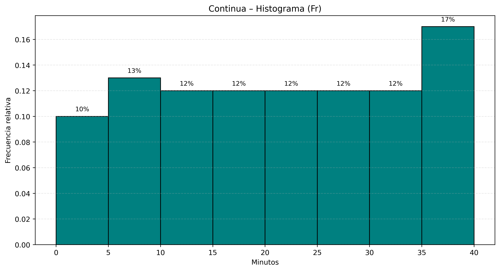
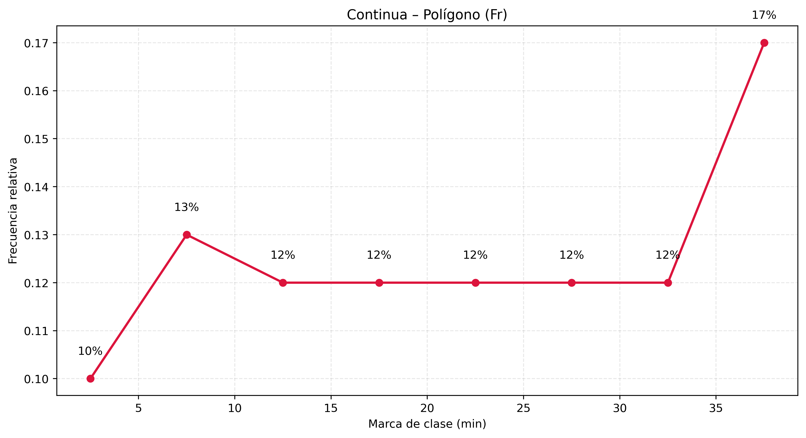
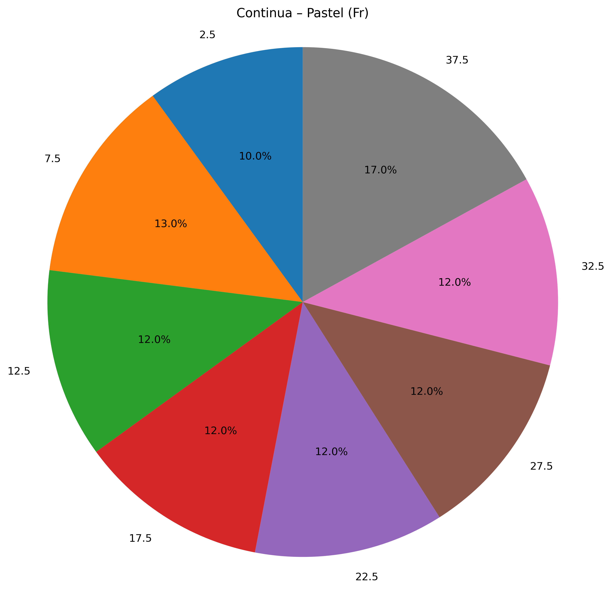
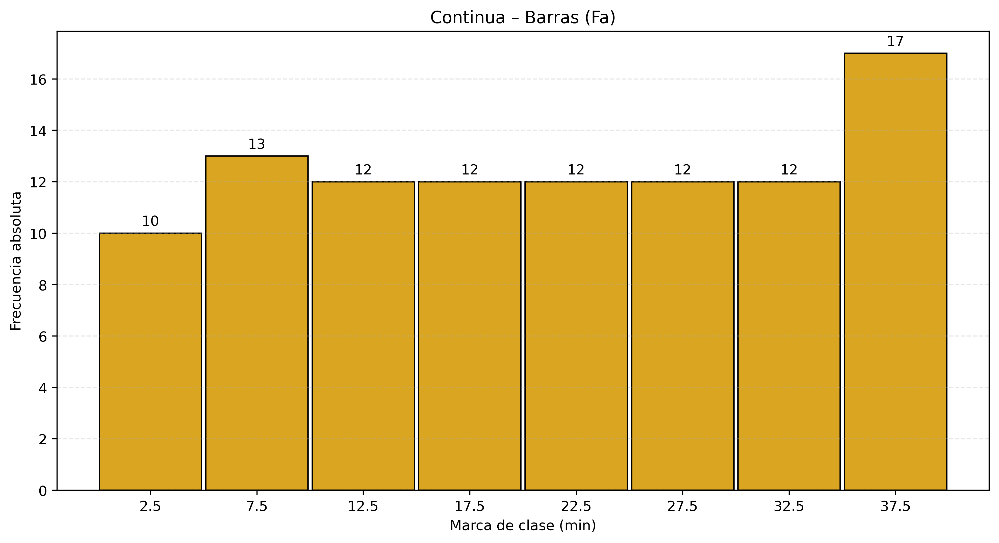
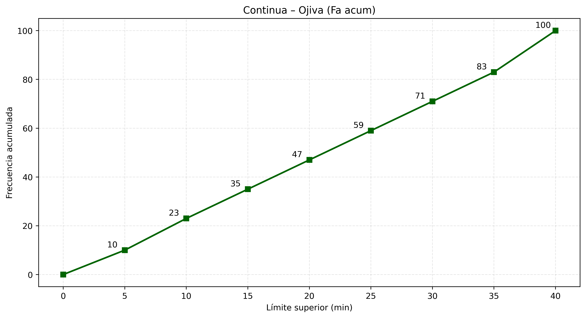
| TABLA DE FRECUENCIA CUANTITATIVA CONTINUA |
| CLASE |
LIMITE INFERIOR |
LIMITE SUPERIOR |
MARCA DE CLASE |
Fa |
Fr |
| 1 |
0 |
5 |
2.5 |
10 |
10% |
| 2 |
5 |
10 |
7.5 |
13 |
13% |
| 3 |
10 |
15 |
12.5 |
12 |
12% |
| 4 |
15 |
20 |
17.5 |
12 |
12% |
| 5 |
20 |
25 |
22.5 |
12 |
12% |
| 6 |
25 |
30 |
27.5 |
12 |
12% |
| 7 |
30 |
35 |
32.5 |
12 |
12% |
| 8 |
35 |
40 |
37.5 |
17 |
17% |
| Total 100 / 100% |
CONCLUCIONES
Los tiempos de traslado desde casa a la escuela de los 100 estudiantes, la mayoría concentra tiempos bajos 0-2 min y moderados 3-4 min. Los tiempos promedio son relativamente cortos, aunque un subgrupo enfrenta trayectos más largos que podrían afectar la puntualidad.